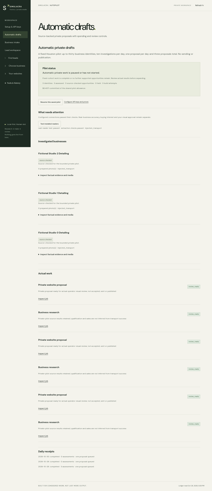
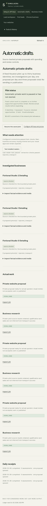
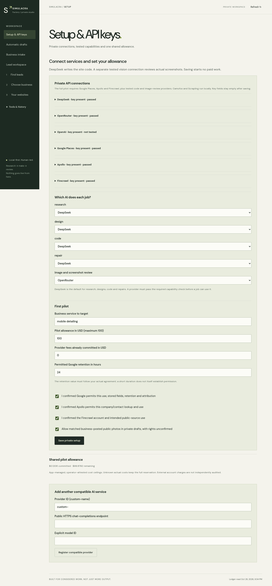

Enough evidence and images
Keep source links and image hashes. Review actual pixels. Use matched photos only in the private concept, with rights marked unconfirmed.
A Houston service business becomes a private website concept through evidence, real browser checks and your judgment. DeepSeek writes the code. A tested vision model inspects the actual screens.
Evidence label: the app screenshots below use fictional test businesses and injected source/AI replies. The browser, parser, ledger and ZIP checks are real local execution. These images do not prove live lead yield, live model design quality or a completed VPS deployment.
Save keys privately. Choose models. Confirm account prices, source use and the shared $100 pilot allowance.
Google supplies up to 30 fixed identities. Apollo checks company information and available work contacts. Overture can add an advisory comparison.
Firecrawl searches for websites. Scrapling and the guarded browser inspect public pages. Wrong identities, stale facts and incomplete checks stay held.
Freeze observed services, contact details and sources. Prepare matched public images for private use, or use the explicit photo-free design path.
Render three opening designs, compare real desktop/phone captures, then build five pages. Check behavior, facts, assets and screenshots. Repairs are bounded.
Try the real site. Record an exact-version verdict. Download the checked ZIP. Sending, publishing and client approval remain separate.
The fixed-cohort dashboard shows actual held reasons, source-checked assessments, work states and spending. The proof advances three simulated schedule dates; it does not wait 72 real hours.


Keys remain blank after saving. Connection tests are explicit and may consume credits. Current prices and source permissions are account-specific confirmations.

Keep source links and image hashes. Review actual pixels. Use matched photos only in the private concept, with rights marked unconfirmed.
Use typography, original abstract graphics and supported services. Do not fabricate client work or attach an unrelated portfolio.
Keep the business and its reason in the cohort. No score or model confidence can replace missing identity, contact or activity evidence.
Keep the reservation. Stop new paid work. Inspect the receipt, fix the service and resume explicitly within the same history and allowance.
Supply the necessary account access and permitted network destinations, install genuine Camoufox and run the real Houston cohort. Measure at least five suitable opportunities, produce three actual AI proposals, have two accepted by you and verify 72 real hours on the Hostinger VPS with outage/restart/restore exercises.
These are acceptance targets. No source can promise willing customers, and no API key guarantees strong design. The app makes evidence, failures, cost and review inspectable.